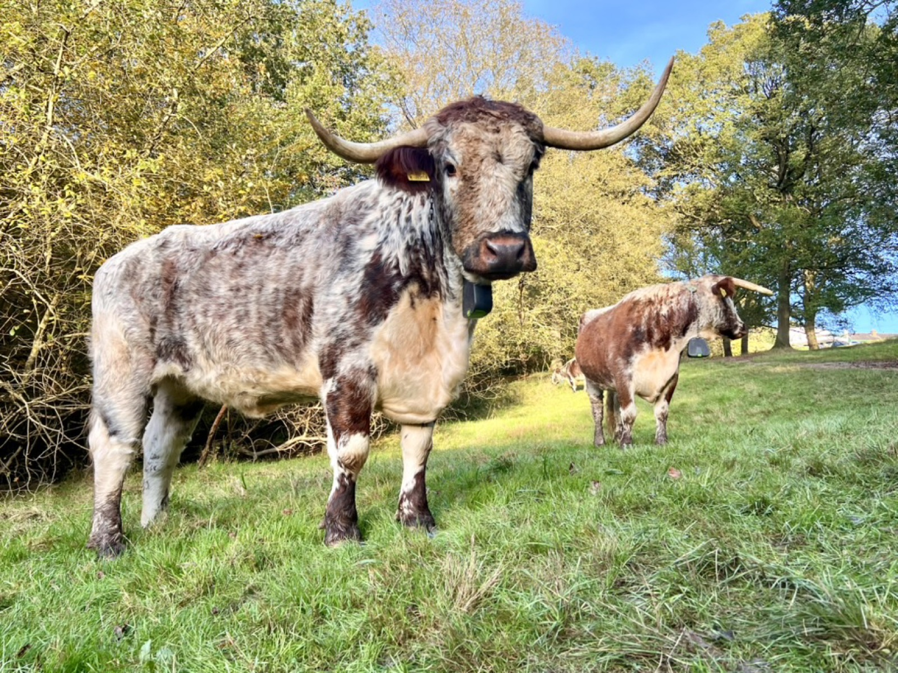
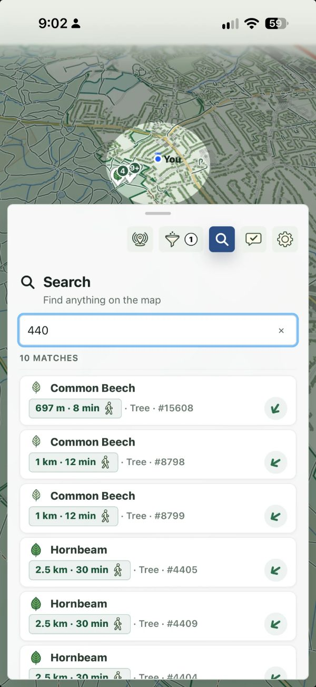
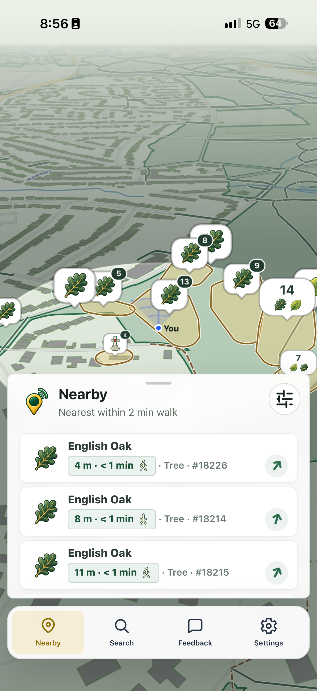
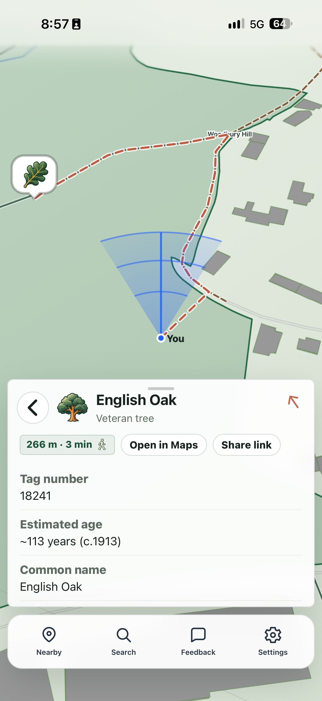

Works where your phone doesn't
Download once, then explore the trees, paths and landmarks without a signal.
A free, offline map of Epping Forest. Find 24,906 veteran trees, forest paths, pubs and grazing cattle.
The map is currently in early testing. Sign up to hear when testing opens to more people.

Round the forest · Every week
Local discoveries, road closures, events and cattle updates — a weekly round-up from around Epping Forest.
Latest field notes
The newest edition’s local stories appear here when available.
By choosing “Email me updates”, you agree to receive emails from Epping Forest Finds when early testing opens, plus weekly Epping Forest Ledger updates once the site launches.
Step 2 of 2
Don’t forgetCheck your inbox for an email from Epping Forest Finds. Open it and click “Confirm my email” to complete your sign-up.
Can’t see it? Check your spam or junk folder.
Explore the categories, or expand each one to see the places and features included.
Download once, then explore the trees, paths and landmarks without a signal.
Look up a tree’s tag number to find its species, record and estimated age.
See the latest reported cattle locations from their GPS collars. Positions refresh while online; offline, you’ll see the last saved positions, which may be out of date.
Each tag identifies a tree in the Veteran Tree Register. Look up one you’ve spotted, or choose one for your next walk.
Some of the data may not be completely accurate. Please report any issues you find and we’ll pass them on to the City of London.


